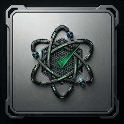

DEFCON Todo
Tasks ranked by urgency · iPhone & Android · by QuantiphAi
Contact support
Questions, problems or ideas? Email mail@quantiph.ai and we’ll get back to you.
Moving to a new iPhone
- On your old iPhone, tap ⓘ → Email Backup and send the email to yourself.
- Install DEFCON Todo on the new iPhone.
- Open the email, tap the backup attachment and choose DEFCON (backups work between iPhone and Android), then tap Replace My List.
Forgot your PIN?
For your privacy, the PIN can’t be recovered or reset. The only way back in is to delete and reinstall the app, which erases your list. If you have an emailed backup, you can restore it after reinstalling.
Priority levels
From most to least urgent: NOW, TODAY, DEFCON 1 (Critical) through DEFCON 5 (Low), and Later. Later tasks are hidden until you tap the clock button.